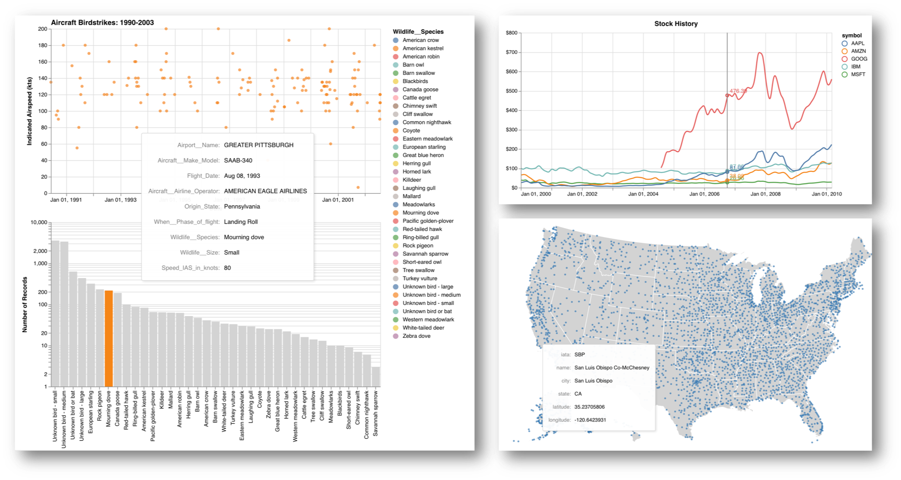

Altair: Interactive Plots on the Web
Contents
- Intro to Altair
- Building Interactive Altair Charts
- Sharing Interactive Altair Charts on the Web
- Resources

Adding interactivity to data visualizations can be helpful for better exploring the data and fun. Sharing interactive visualizations online extends the benefits to others. In this post I will show some examples of using the Altair library to create and share some simple interactive visualizations. The examples below are largely derived from the excellent Altair gallery—I claim no original work on these but enjoyed working with them to learn the mechanics of interactive visualization in Altair.
Intro to Altair
Altair is a visualization library for Python notable for taking a declarative approach based on a grammar of graphics using Vega and Vega-Lite. As Jake VanderPlas explains when presenting Altair, this allows visualization concepts to map directly to visualization implementation.
Instead of imperatively specifying how to render the visualization as in matplotlib, with Altair (and vega/vega-lite) you specify what to visualize. This approach makes for rapid exploration of your data and iteration between chart types.
Every Altair chart is made up of Data, Marks, and Encodings, which can be modified with Binning and Aggregation. Given a simple dataset with columns of x and y we can define a barebones Altair chart like this:
alt.Chart(data).mark_point().encode(
x='x:Q',
y='mean(y)',
)
A quick summary of the properties available is given in the table below, with links to the Altair documentation of the corresponding section:
| | Marks | | | Encodings | | | Data Types | | | Binning & Aggregation | |
|---|---|---|---|
mark_area |
x: x-axis value |
:Q Quantitative |
average |
mark_bar |
y: y-axis value |
:N Nominal |
average |
mark_circle |
color |
:O Ordinal |
sum |
mark_geoshape |
opacity |
:T Temporal |
count |
mark_line |
shape |
distinct |
|
mark_point |
size |
max |
|
mark_rect |
row |
q1/q3 |
|
mark_rule |
column |
ci0/ci1 |
|
mark_square |
tooltip |
etc... | |
mark_text |
etc... | ||
mark_tick |
|||
mark_trail |
Altair is well-documented with many helpful examples—see the resources at the bottom of this page for links to more information.
Building Interactive Altair Charts
Next I'll walk through several examples of interactive Altair charts. These are also available in the original Jupyter Notebook. Note that the interactivity is best supported by viewing this on a laptop rather than mobile.
Cars Example
We'll start with a basic static scatter plot showing the relationship between Horsepower and Gas Mileage for a number of cars. Again we simply specify the data (along with data types for each value denoted by :Q in this case), chart type, and encoding.
import altair as alt
from vega_datasets import data
cars = data.cars.url
alt.Chart(cars).mark_point().encode(
x='Horsepower:Q',
y='Miles_per_Gallon:Q',
)
The result is a familiar scatter plot.
Then we add in some interactivity, including tooltips and a selectable legend, which was inspired by Jake VanderPlas' PyCon 2018 tutorial:
import altair as alt
from vega_datasets import data
cars = data.cars.url
# define selection
click = alt.selection_multi(encodings=['color'])
# scatter plots of points
scatter = alt.Chart(cars).mark_circle().encode(
x='Horsepower:Q',
y='Miles_per_Gallon:Q',
size=alt.Size('Cylinders:O',
scale=alt.Scale(range=(20,100))
),
color=alt.Color('Origin:N', legend=None),
tooltip=['Name:N','Horsepower:Q','Miles_per_Gallon:Q',
'Cylinders:O','Origin:N'],
).transform_filter(
click
).interactive()
# legend
legend = alt.Chart(cars).mark_rect().encode(
y=alt.Y('Origin:N', axis=alt.Axis(title='Select Origin')),
color=alt.condition(click, 'Origin:N',
alt.value('lightgray'), legend=None),
size=alt.value(250)
).properties(
selection=click
)
chart = (scatter | legend)
chart.save('cars-clickable-legend.html')
For about 3x the amount of code we get a lot more information and ease of exploring this data. By adding encodings for origin of manufacture (color) and size (number of cylinders) we can view more dimensions of the dataset. With the .interactive() method we can scroll on the chart to zoom in and out as well as pan around. By adding a "legend" (actually another chart with interactivity) we can click to highlight one or multiple origins while hiding the others.
Stocks Example
This next example visualizes stocks data over time with a helpful multiline tooltip (original examples here and here).
import altair as alt
# Create a selection that chooses the nearest point & selects based on x-value
nearest = alt.selection(type='single', nearest=True, on='mouseover',
fields=['date'], empty='none')
# The basic line
line = alt.Chart().mark_line(interpolate='basis').encode(
alt.X('date:T', axis=alt.Axis(title='')),
alt.Y('price:Q', axis=alt.Axis(title='',format='$f')),
color='symbol:N'
)
# Transparent selectors across the chart. This is what tells us
# the x-value of the cursor
selectors = alt.Chart().mark_point().encode(
x='date:T',
opacity=alt.value(0),
).add_selection(
nearest
)
# Draw points on the line, and highlight based on selection
points = line.mark_point().encode(
opacity=alt.condition(nearest, alt.value(1), alt.value(0))
)
# Draw text labels near the points, and highlight based on selection
text = line.mark_text(align='left', dx=5, dy=-5).encode(
text=alt.condition(nearest, 'price:Q', alt.value(' '))
)
# Draw a rule at the location of the selection
rules = alt.Chart().mark_rule(color='gray').encode(
x='date:T',
).transform_filter(
nearest
)
# Put the five layers into a chart and bind the data
stockChart = alt.layer(line, selectors, points, rules, text,
data='https://raw.githubusercontent.com/altair-viz/vega_datasets/master/vega_datasets/_data/stocks.csv',
width=600, height=300,title='Stock History')
stockChart.save('stocks.html')
By layering a line chart, selection based on the points nearest our mouseover, and text/points/line to visualize the selected data we now have a visually appealing way to explore this stock history.
Airports Example
Altair also supports geographic projections to visualize geospatial data.
import altair as alt
from vega_datasets import data
states = alt.topo_feature(data.us_10m.url, feature='states')
airports = data.airports.url
# US states background
background = alt.Chart(states).mark_geoshape(
fill='lightgray',
stroke='white',
).properties(
width=800,
height=500
).project('albersUsa')
# airport positions on background
points = alt.Chart(airports).mark_circle().encode(
longitude='longitude:Q',
latitude='latitude:Q',
size=alt.value(15),
color=alt.value('#3377B3'),
tooltip=['iata:N','name:N','city:N','state:N','latitude:Q','longitude:Q'],
)
chart = (background + points)
chart.save('airports.html')
chart
In this example we extend the simple airports example to include tooltips with additional information about the airport you hover over. (Another cool example to replicate in Altair is visualizing flights between each city in this example).
Birdstrikes Example
At this point you are probably thinking that these building blocks Altair provides are easy stepping stones to a full web dashboard. This example (based off the Seattle weather example) shows how you can use selection in one chart to filter data in antoher.
import altair as alt
from vega_datasets import data
color = alt.Color('Wildlife__Species:N')
# We create two selections:
# - a brush that is active on the top panel
# - a multi-click that is active on the bottom panel
brush = alt.selection_interval(encodings=['x'])
click = alt.selection_multi(encodings=['color'])
# Top panel is scatter plot of temperature vs time
points = alt.Chart().mark_circle().encode(
alt.X('Flight_Date:T', axis=alt.Axis(title='Date')),
alt.Y('Speed_IAS_in_knots:Q',
axis=alt.Axis(title='Indicated Airspeed (kts)'),
),
color=alt.condition(brush, color, alt.value('lightgray')),
).properties(
width=600,
height=300
).add_selection(
brush
).transform_filter(
click
)
# Bottom panel is a bar chart of species
bars = alt.Chart().mark_bar().encode(
alt.Y('count()', scale=alt.Scale(type='log')),
alt.X('Wildlife__Species:N', sort=alt.SortField(field='sort_order', op='count', order='descending')),
color=alt.condition(click, color, alt.value('lightgray')),
).transform_filter(
brush
).properties(
width=600,
).add_selection(
click
)
alt.vconcat(points, bars,
data=data.birdstrikes.url,
title="Aircraft Birdstrikes: 1990-2003"
).save('birdstrikes.html')
By selecting one (click) or multiple (shift-click) species in the bar chart at the bottom, the scatter plot on top will update to show only those data points. It's easy to see how adding more of these building blocks could produce a nice dashboard.
Looking back at the examples above, we have seen some helpful capabilities built into Altair:
- Use selectors (alt.selection_single, alt.selection_multi, alt.selection_interval) to highlight data interactively.
- Combine charts by layering or concatenation to show multiple views of the data.
- Export charts in a variety of formats, including HTML for sharing on the web.
Sharing Interactive Altair Charts on the Web
I was initially drawn to Altair because of this ease of use offered by the declarative approach to visualization. The further ability to easily generate and share interactive visualizations on the web makes it even more useful.
The simplest way to share an Altair plot on the web is to simply export as html using .save('chartName.html'). This HTML file includes the Vega, Vega-Lite, and vegaEmbed scripts, a JSON specification of your chart, and the JavaScript needed for interactivity. This makes it easy to share a single chart.
This blog is generated with Pelican, and as you can see above includes multiple interactive charts written in Altair. Below I walk through the process for including interactive Altair charts with Pelican.
Pelican Template
Since we need to load some styling and the Vega, Vega-Lite, and vegaEmbed scripts on any page that includes an Altair chart, we will add these to the article template in theme/templates/article.html.
{% if 'vega' in article.include %}
<style>
.vega-actions a {
margin-right: 12px;
color: #757575;
font-weight: normal;
font-size: 13px;
}
.error {
color: red;
}
</style>
<script src="https://cdn.jsdelivr.net/npm//vega@3.3.1"></script>
<script src="https://cdn.jsdelivr.net/npm//vega-lite@2.4.3"></script>
<script src="https://cdn.jsdelivr.net/npm//vega-embed@3.11"></script>
{% endif %}
Now, whenever we add the include: vega tag at the top of an article's markdown file, these items will be included.
Add a Single Plot
To add a single plot to an article, we open the chartName.html file we exported from Altair and copy the below portion which defines a <div> for our chart and contains the JSON specification and JavaScript for the chart. Note that when placing this into a markdown document we need to un-indent so Pelican can generate the page properly.
<div id="vis"></div>
<script type="text/javascript">
var spec = {"config":{"view":{"width":400,"height":300}},"data":{"url":"https://vega.github.io/vega-datasets/data/cars.json","format":{"type":"json"}},"mark":"point","encoding":{"x":{"type":"quantitative","field":"Horsepower"},"y":{"type":"quantitative","field":"Miles_per_Gallon"}},"$schema":"https://vega.github.io/schema/vega-lite/v2.4.3.json"};
var embed_opt = {"mode": "vega-lite"};
function showError(el, error){
el.innerHTML = ('<div class="error">'
+ '<p>JavaScript Error: ' + error.message + '</p>'
+ "<p>This usually means there's a typo in your chart specification. "
+ "See the javascript console for the full traceback.</p>"
+ '</div>');
throw error;
}
const el = document.getElementById('vis1');
vegaEmbed("#vis", spec, embed_opt)
.catch(error => showError(el, error));
</script>
Add Multiple Plots
As shown above it is entirely possible to add multiple visualizations to a single page, but you'll need to rename some variables to make them unique and allow the subsequent charts to render. I simply incremented the required variables (vis, spec, el, and embed_opt) so they are unique.
<div id="vis2"></div>
<script type="text/javascript">
var spec2 = {"config":{"view":{"width":400,"height":300}},"data":{"url":"https://vega.github.io/vega-datasets/data/cars.json","format":{"type":"json"}},"mark":"point","encoding":{"x":{"type":"quantitative","field":"Horsepower"},"y":{"type":"quantitative","field":"Miles_per_Gallon"}},"$schema":"https://vega.github.io/schema/vega-lite/v2.4.3.json"};
var embed_opt2 = {"mode": "vega-lite"};
function showError(el2, error){
el2.innerHTML = ('<div class="error">'
+ '<p>JavaScript Error: ' + error.message + '</p>'
+ "<p>This usually means there's a typo in your chart specification. "
+ "See the javascript console for the full traceback.</p>"
+ '</div>');
throw error;
}
const el2 = document.getElementById('vis2');
vegaEmbed("#vis2", spec2, embed_opt2)
.catch(error => showError(el2, error));
</script>
Set up in this manner, generating your Pelican site will pull in the required external scripts, style, and then display your interactive visualizations. You can view the full markdown file that generated the HTML - ADD LINK of this post to see how it all fits together.
Closing Thoughts
A successful visualization is all about finding the right tool for the job. I'm increasingly convinced that if you want to quickly interact with your data or share it online Altair is a great option. I'm excited to learn more about Altair as more features are added. Thanks to Jake VanderPlas, Brian Granger, and all those who have contributed to Altair and the technologies it is built on.
Resources:
- Altair Docs
- Altair Tutorials
- Example data to play with: vega-datasets
- Jim Vallandingham's Altair write-up
- pbpython's Altair write-up
- Jake VanderPlas' PyCon 2018 tutorial:
- You can view the original Jupyter Notebook that was used to generate these examples.
- All code examples in this notebook use Altair 2.1.0